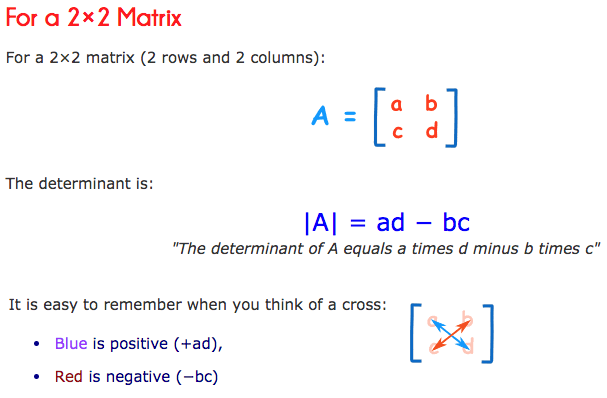

13) More NumPy Plus Linear Algebra Fundamentals¶
Related references:
- https://jakevdp.github.io/PythonDataScienceHandbook/02.04-computation-on-arrays-aggregates.html
- https://jakevdp.github.io/PythonDataScienceHandbook/02.05-computation-on-arrays-broadcasting.html
- Feature Engineering for Machine Learning
- The Manga Guide to Linear Algebra
- Introduction to Linear Algebra by Gilbert Strang
- Advanced Engineering Mathematics by Erwin Kreyszig
First, reminder to submit evaluations¶
You have until midnight tonight! As of Tuesday, 12/27 have completed the quiz I set up to self-report taking it, earning participation points.
The simplicity of NumPy math¶
As we’ve discussed, Numpy allows us to perform math with arrays without writing loops, speeding programs and programming.
As always, array sizes must be compatible. Binary operations are performed on an element-by-element basis:
In [1]:
import numpy as np
a = np.array([0, 1, 2])
b = np.array([5, 5, 5])
print(a + b)
[5 6 7]
Broadcasting: How NumPy will make compatible arrays¶
We can also perform these operations with a scalar; NumPy will
“broadcast” it to the correct size for the binary operation. In the case
below, it will treat 5 as the ndarray [5, 5, 5] while never
actually creating such an array.
In [2]:
print(a + 5)
[5 6 7]
A visual to describe broadcasting:

From PythonDataScienceHandbook
The light boxes represent the broadcasted values: again, this extra memory is not actually allocated in the course of the operation, but it can be useful conceptually to imagine that it is.
As shown in the visual above, broadcasting can also be done in higher dimensions:
In [3]:
m = np.ones((3, 3))
m + a
Out[3]:
array([[ 1., 2., 3.],
[ 1., 2., 3.],
[ 1., 2., 3.]])
In [4]:
print(a)
print(b.reshape((3, 1)))
[0 1 2]
[[5]
[5]
[5]]
In [5]:
a + b.reshape((3, 1))
Out[5]:
array([[5, 6, 7],
[5, 6, 7],
[5, 6, 7]])
More examples of NumPy’s math knowledge¶
In [6]:
x = [1, 2, 4, 10]
print("x =", x)
print("e^x =", np.exp(x))
print("2^x =", np.exp2(x))
print("3^x =", np.power(3, x))
print("ln(x) =", np.log(x))
print("log2(x) =", np.log2(x))
print("log10(x) =", np.log10(x))
print("sum(x) =", np.sum(x))
print("min(x) =", np.min(x))
print("max(x) =", np.sum(x))
print("mean(x) =", np.mean(x))
print("std(x) =", np.std(x))
x = [1, 2, 4, 10]
e^x = [ 2.71828183e+00 7.38905610e+00 5.45981500e+01 2.20264658e+04]
2^x = [ 2. 4. 16. 1024.]
3^x = [ 3 9 81 59049]
ln(x) = [ 0. 0.69314718 1.38629436 2.30258509]
log2(x) = [ 0. 1. 2. 3.32192809]
log10(x) = [ 0. 0.30103 0.60205999 1. ]
sum(x) = 17
min(x) = 1
max(x) = 17
mean(x) = 4.25
std(x) = 3.49106001094
What about math with NaNs?¶
NaN = not a number, and you can specify NaN with np.nan.
In [7]:
m = np.random.random((3, 4))
n = np.random.random((4, 3))
m[2, 3] = np.nan
print(m)
[[ 0.67980737 0.25362013 0.76169037 0.9530701 ]
[ 0.76111897 0.78920103 0.77080858 0.68226061]
[ 0.95589078 0.76159237 0.03966544 nan]]
In [8]:
m + n.T
Out[8]:
array([[ 0.76555631, 1.08740763, 1.67181914, 1.13108121],
[ 1.59748741, 1.30096477, 1.21827405, 0.90559381],
[ 1.69321431, 0.99425616, 0.67699273, nan]])
Let’s check if these other functions work with np.nan:
In [9]:
print("m =", m)
print("e^m =", np.exp(m))
print("2^m =", np.exp2(m))
print("3^m =", np.power(3, m))
print("ln(m) =", np.log(m))
print("log2(m) =", np.log2(m))
print("log10(m) =", np.log10(m))
print("sum(m) =", np.sum(m))
print("min(m) =", np.min(m))
print("max(m) =", np.max(m))
print("mean(m) =", np.mean(m))
print("std(m) =", np.std(m))
m = [[ 0.67980737 0.25362013 0.76169037 0.9530701 ]
[ 0.76111897 0.78920103 0.77080858 0.68226061]
[ 0.95589078 0.76159237 0.03966544 nan]]
e^m = [[ 1.97349753 1.28868217 2.14189376 2.59366026]
[ 2.14067022 2.20163668 2.1615133 1.97834494]
[ 2.60098646 2.14168387 1.04046262 nan]]
2^m = [[ 1.60192585 1.19219492 1.69547601 1.93598813]
[ 1.69480462 1.72811716 1.70622579 1.60465217]
[ 1.93977696 1.69536085 1.02787543 nan]]
3^m = [[ 2.11033083 1.32131861 2.308972 2.84924637]
[ 2.30752298 2.3798226 2.33221807 2.11602618]
[ 2.8580894 2.30872343 1.04454036 nan]]
ln(m) = [[-0.38594581 -1.3719177 -0.27221514 -0.04806682]
[-0.27296561 -0.2367342 -0.26031521 -0.38234357]
[-0.04511162 -0.27234381 -3.22727502 nan]]
log2(m) = [[-0.5568021 -1.97925886 -0.39272343 -0.06934576]
[-0.39380613 -0.34153526 -0.37555547 -0.55160518]
[-0.06508231 -0.39290906 -4.65597366 nan]]
log10(m) = [[-0.16761413 -0.59581629 -0.11822153 -0.02087515]
[-0.11854746 -0.10281236 -0.11305346 -0.1660497 ]
[-0.01959173 -0.11827741 -1.40158773 nan]]
sum(m) = nan
min(m) = nan
max(m) = nan
mean(m) = nan
std(m) = nan
Not all did, but there are “NaN=safe” versions of functions! That is, they ignore the NaNs and carry on.
| Function Name | NaN-safe Version | Description |
|---|---|---|
np.sum |
np.nansum |
Compute sum of elements |
np.prod |
np.nanprod |
Compute product of elements |
np.mean |
np.nanmean |
Compute mean of elements |
np.std |
np.nanstd |
Compute standard deviation |
np.var |
np.nanvar |
Compute variance |
np.min |
np.nanmin |
Find minimum value |
np.max |
np.nanmax |
Find maximum value |
np.argmin |
np.nanargmin |
Find index of minimum value |
np.argmax |
np.nanargmax |
Find index of maximum value |
np.median |
np.nanmedian |
Compute median of elements |
np.percentile |
np.nanpercentile |
Compute rank-based statistics of elements |
np.any |
N/A | Evaluate whether any elements are true (see note) |
np.all |
N/A | Evaluate whether all elements are true (see note) |
| N/A | np.isnan |
Test for NaN; returns a boolean array |
Note: NaN, positive infinity and negative infinity evaluate to True because these are not equal to zero.
In [10]:
print("sum(m) =", np.nansum(m))
print("min(m) =", np.nanmin(m))
print("max(m) =", np.nanmax(m))
print("mean(m) =", np.nanmean(m))
print("std(m) =", np.nanstd(m))
sum(m) = 7.40872574277
min(m) = 0.0396654393679
max(m) = 0.955890780586
mean(m) = 0.67352052207
std(m) = 0.266652047917
These are a few examples, but just ask the Internet if there is anything
you need and you’ll get an answer, even if that is to use
scipy.special as we had to for erfc. Let’s focus on a particular
kind of math NumPy knows well: linear algebra.
Linear algebra¶
Overview¶
 This and other comics from The Manga Guide to
Linear
Algebra
This and other comics from The Manga Guide to
Linear
Algebra
Importantly, they are great for solving linear equations, especially those with the same number unknowns and independent equations. They are great for turning problems into forms that are easily solved by computers!
What is linear algebra
Fundamentals¶
Inverse Functions¶

Linear Transformations¶
Let \(x_i\) and \(x_j\) be two arbitrary elements of the set \(X\), \(c\) be any real number, and \(f\) be a function from \(X\) to \(Y\). \(f\) is called a linear transformation from \(X\) to \(Y\) if is satisfies both:
- \(f(x_i) + f(x_j) = f(x_i + x_j)\)
- \(cf(x_i) = f(cx_i)\)

Functions
Matrices¶

Matrix Addition¶

Matrices
In [11]:
a = np.array([[10, 10]])
b = np.array([[3, 6]])
print(a, b)
[[10 10]] [[3 6]]
In [12]:
print(a - b)
[[7 4]]
Scalar Multiplication¶

Matrices
In [13]:
c = np.arange(1, 7).reshape((3, 2))
print(c)
[[1 2]
[3 4]
[5 6]]
In [14]:
print(10 * c)
[[10 20]
[30 40]
[50 60]]
Matrix Multiplication¶

Matrices

Matrices
In [15]:
d = np.array([[8, -3], [2, 1]])
e = np.array([[3, 1], [1, 2]])
print(d)
print(e)
[[ 8 -3]
[ 2 1]]
[[3 1]
[1 2]]
In [16]:
print(d * e)
print(np.multiply(e, d))
[[24 -3]
[ 2 2]]
[[24 -3]
[ 2 2]]
In [17]:
np.matmul(d, e)
Out[17]:
array([[21, 2],
[ 7, 4]])
In [18]:
np.matmul(e, d)
Out[18]:
array([[26, -8],
[12, -1]])
Cautions¶
- In general $ :raw-latex:`\mathbf{AB}` :raw-latex:`\neq `:raw-latex:`mathbf{BA}`$
- $:raw-latex:mathbf{AB} = 0 $ does not necessarily imply that $:raw-latex:mathbf{A} = 0 $ or $:raw-latex:mathbf{B} = 0 $ or $:raw-latex:mathbf{BA} = 0 $
- $:raw-latex:mathbf{AC} = :raw-latex:`\mathbf{AD}` $ does not necessarily imply that $:raw-latex:mathbf{C} = :raw-latex:`\mathbf{D}` $, even when $:raw-latex:mathbf{A} :raw-latex:`neq `0 $
(more about this later)
In [19]:
f = np.array([[1, 1], [2, 2]])
g = np.array([[-1, 1], [1, -1]])
print(f)
print(g)
[[1 1]
[2 2]]
[[-1 1]
[ 1 -1]]
In [20]:
np.matmul(f, g)
Out[20]:
array([[0, 0],
[0, 0]])
In [21]:
np.matmul(g, f)
Out[21]:
array([[ 1, 1],
[-1, -1]])
In [22]:
h = np.array([[2, 1], [2, 2]])
k = np.array([[3, 0], [1, 3]])
print(f)
print(h)
print(k)
[[1 1]
[2 2]]
[[2 1]
[2 2]]
[[3 0]
[1 3]]
In [23]:
print(np.matmul(f, h))
print(np.matmul(f, k))
[[4 3]
[8 6]]
[[4 3]
[8 6]]
Multiplication properties of numbers that do hold true for matrices¶
- \(\mathbf{A}(\mathbf{BC}) = (\mathbf{AB})\mathbf{C} = \mathbf{ABC}\)
- \(k\mathbf{AB} = \mathbf{A}k\mathbf{B}\)
- \((\mathbf{A} + \mathbf{B})\mathbf{C} = \mathbf{AC} + \mathbf{BC}\)
- \(\mathbf{C}(\mathbf{A} + \mathbf{B}) = \mathbf{CA} + \mathbf{CB}\)
Inner product of vectors¶
When an \(m\times 1\) matrix (aka a row vector) is multiplied by a $ 1 :raw-latex:`\times `m$ matrix (aka a column vector), we get a :math:`1 \times 1` product, called the inner product or dot product, denoted \(\mathbf{a} \bullet \mathbf{b}\).
In [24]:
np.dot([4, -1, 5], [2, 5, 8])
Out[24]:
43
The power of matrix multiplication is in linear transformations. That topic will come after we finish matrices and talk about vectors.
Special Matrices¶
An \(n \times n\) matrix is called a square matrix. All others are rectangular matrices.

Matrices
We already covered 1 and 2. An interesting tidbit: the transpose of a product equals the product of the transposed factors, taken in reverse order:
Would you wager a guess as to:
- What a symmetric matrix is?
- A skew-symmetric matrix?
- What property must they have?
Answers:
- \(\mathbf{A}^T = \mathbf{A}\)
- \(\mathbf{A}^T = -\mathbf{A}\)
- They must be square matrices
How about upper and lower triangular matrices?
Upper triangular matrices have 0 for all elements below the diagonal, and lower triangular matrices have 0 for all elements above the diagonal.

Matrices
A nice shortcut available for diagonal matrices:
In [25]:
f = np.diagflat([[2, 3]])
print(f)
[[2 0]
[0 3]]
In [26]:
np.linalg.matrix_power(f, 3)
Out[26]:
array([[ 8, 0],
[ 0, 27]])

Matrices
What is the identity matrix and why is it called that?¶
In [27]:
eye = np.eye(2, dtype=int)
print(d)
print(eye)
[[ 8 -3]
[ 2 1]]
[[1 0]
[0 1]]
In [28]:
np.matmul(d, eye)
Out[28]:
array([[ 8, -3],
[ 2, 1]])
In [29]:
np.matmul(eye, d)
Out[29]:
array([[ 8, -3],
[ 2, 1]])

Matrices
If the product of two square matrices is an identity matrix, then the two factor matrices are inverses of each other. This means that $ :raw-latex:`\left`( \\begin{array}{ccc} x_{11} & x_{12} \\ x_{21} & x_{22} \\end{array} :raw-latex:`right`) $ is an inverse matrix to $ :raw-latex:`left`(
:raw-latex:`\right`) $ if

Matrices

Matrices

Matrices
Note: the example above has one solution. Singular cases (definition below) have none or infinite solutions.

Matrices
Now, using Gaussian elimination (e.g. the sweeping method) find, the inverse matrix of $ :raw-latex:`left`(
In [30]:
g = np.array([[3, 1], [1, 2]])
h = np.linalg.inv(g)
print(h)
[[ 0.4 -0.2]
[-0.2 0.6]]
In [31]:
# checking our work
np.matmul(g, h)
Out[31]:
array([[ 1., 0.],
[ 0., 1.]])
In [32]:
np.matmul(h, g)
Out[32]:
array([[ 1., 0.],
[ 0., 1.]])

Matrices

Matrices

Matrices
If A has an inverse, than A is a nonsingular matrix. Similarly, if A has no inverse, then A is called a singular matrix.
If A has an inverse, the inverse is unique.
Calculating determinants¶
From: https://www.mathsisfun.com/algebra/matrix-determinant.html
In [33]:
k = np.array([[4, 6], [3, 8]])
np.linalg.det(k)
Out[33]:
14.000000000000004

Matrices
In [34]:
m = np.array([[6, 1, 1], [4, -2, 5], [2, 8, 7]])
print(m)
[[ 6 1 1]
[ 4 -2 5]
[ 2 8 7]]
In [35]:
np.linalg.det(m)
Out[35]:
-306.0
Matrices
Fun fact about determinants:¶
For any \(n \times n\) matrices A and B, det(AB) = det(BA) = det(A) det(B).